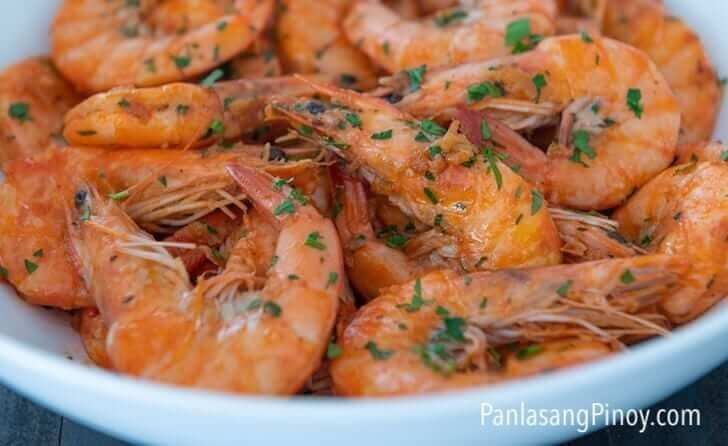

Garlic Butter Shrimp Recipe

Garlic Butter Shrimp is a super easy dish to make. This recipe shows how to cook this beloved dish the Filipino way. I like how it turned out. The dish is rich and flavorful. I enjoyed eating it with newly cooked white rice.
Ingredients
Steps